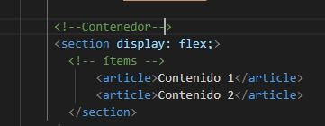

Introducción a Flexbox
Que es Flexbox
FLEX es una nuevo atributo de HTML5 correspondiente a la facilidad de CSS display basado en un contenedor con la propiedad de heredar los atributos a todos los elementos que contenga. Es decir, puedo definir todos los atributos en cuanto diseño, alineación, estilo etc y aplicarlos a todos los elementos dentro del contedorActualmente con FLEXBOX podemos hacer:
- Ordenar eficientemente el contenido sin tocar el codigo HTML
- Alinear los elementos tanto horizontal como verticalmente
- Generar menos codigo y crear diseños mas flexibles

Imagen recuperada de: Camacho, A. (2020). Diseño [Gráfico]. En Flexbox explicado con manzanita (1.a ed., p. 1). Cita en el texto
A continuación explicaremos sus partes:
contenedor
Este es el elemento sobre el que se diseñarán los demas elemntos. se divide en dos grandes ejes:- Eje Principal: Los componentes tomarán una orientación sea horizontal (filas) o vertical (columnas) segun se requiera, por defecto el valor es Row (Filas)
- Eje Secundario: Los elementos de ese eje tomarán la posición contraria al eje principal, es decir si el eje princial es Row (Filas) el eje segundario será Column (Columnas)
Item
Corresponde a cada uno de los elementos creados dentro del contenedor, se veria de la siguiente manera
Notese que en la etiqueta Section se encuentra el atributo display el cual funciona volver el contenedor flexible
Dar dirección a los ejes
usaremos la propiedad flex-flow la cual tendrá dos atributos posibles:En el primero definiremos si el eje principal sera una fila o una columna y también el orden de cada uno de los item
- ROW El cual permite alinear hacia en fila un listado de item de derecha a izquierda
- Row Rever El cual permite alinear hacia en fila un listado de item de izquierda a derecha
- COLUMN Permite crear columnas con item ordenados ascendente
- COLUMN-REVERSE Permite crear columnas con item ordenados descendente


- WRAP NO Permite que el item se desborde del limite
- NOWRAP SI permite que el item se desborde del limite